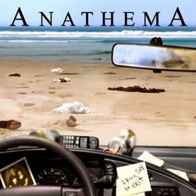

While Paradise Lost and My Dying Bride got more attention from underground doom metal fans, Liverpool natives Anathema were just as important in creating a new strain of doom (sometimes referred to as doom/death) that drew heavily from atmospheric goth metal and, in the early days, featured gruff death-style vocals. Guitar-playing brothers Vincent and Danny Cavanagh formed Anathema in 1990 with vocalist Darren White, bassist Duncan Patterson, and drummer John Douglas, and originally called themselves Pagan Angel. As Anathema, the band recorded a Black Sabbath/Paradise Lost-inspired demo titled An Iliad of Woes; another demo, 1991's All Faith Is Lost, and a Swiss single called "They Die," landed the group a deal with Peaceville Records. Anathema's first official recording, an EP titled The Crestfallen, was released in 1992, and was followed the next year by the full-length Serenades, the most traditional doom-styled album in their catalog.
After a tour, the group reentered the studio in 1994 to record Pentecost III, a five-song mini-album that nonetheless ended up long enough to qualify as a full-length. Delays prevented its release until the following year, by which time the group was already working on its next album. However, after recording had begun, Darren White left the group to form the Blood Divine, taking with him their sound's main connection to death metal. Vincent Cavanagh assumed lead vocal duties, with a cleaner, more accessible style that fit the newly atmospheric direction of the finished album.
The Silent Enigma was released in late 1995, and began to establish Anathema as a unique presence on the underground doom scene. That impression was confirmed by their next release, 1996's heavily gothic Eternity, which featured contributions from Cradle of Filth keyboardist Les Smith. Stretching its songs into sorrowful, orchestrated epics, Eternity's Pink Floyd-ish spaciness alienated some fans of Anathema's older sound at first, but quickly proved to be their most original work to date. Drummer Douglas left the group in late 1997, and ex-Solstice drummer Shaun Steels joined the following year. Alternative 4 was released in the summer of 1998, taking a simpler, subtler, and more polished approach than its predecessor; shortly afterward, bassist Patterson left and was replaced by Dave Pybus. In 1999, original drummer John Douglas rejoined, and the group switched to the Music for Nations label. The well-received Judgement album was issued later that year, marking a complete departure from metal, though the themes in their songs remained gloomy while taking on an air of existential despair. Later in the year, keyboardist Martin Powell and Cradle of Filth's keyboardist Les Smith traded bands; Smith became an integral part of Anathema's sound.
 The band underwent more changes as the new century began. Just before the release of 2001's A Fine Day to Exit, studio bassist Pybus left to join Cradle of Filth as well. He was replaced by touring bassist George Roberts and later by Jamie Cavanagh. Danny Cavanagh left the band for a year in 2002, but returned for 2003's deeply atmospheric, nearly prog rock A Natural Disaster. Music for Nations closed after its distributor's acquisition by Sony/BMG, and Anathema found itself without a label. They continued to tour and release tracks on their website via the "pay-what-you-think-it's-worth" model established by Radiohead.
They eventually signed to the Snapper subsidiary KScope, and issued a collection of acoustic re-recordings of catalog items titled Hindsight. It was followed in 2010 by We're Here Because We're Here and Falling Deeper in 2011. The band's ninth album, Weather Systems, was recorded in Liverpool, North Wales, and Oslo. It was produced by the Cavanagh brothers and Norway's Christer-André Cederberg, and released in 2012.
After a lengthy tour, Anathema took a short break before getting back down to work, eager to chart the new progressive direction the band was finding live. Sessions with Cederberg took place and a new album, Distant Satellites, emerged. Mixed by Cederberg and Steven Wilson, the set was released in June of 2014. A live album, A Sort of Homecoming, featuring the group's performance at Liverpool Cathedral, followed in 2015. The group's eleventh studio album, The Optimist, arrived in 2017; another conceptual effort, its plot picked up where 2001's A Fine Day to Exit left off, exploring the mysterious fate of the protagonist from that fan-favorite album.